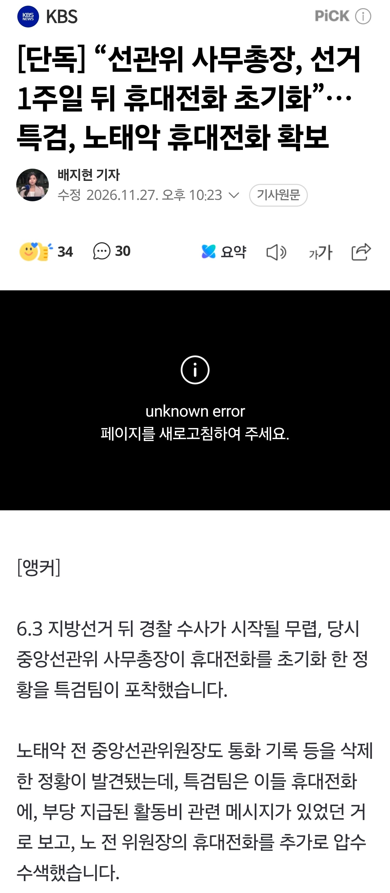

https://n.news.naver.com/article/056/0012302879

https://n.news.naver.com/article/056/0012302879
응 포렌
저딴짓은 누가먼저 시작했는지 참 좆같다는 말밖에 안나옴
걍 폰을 파쇄기에 넣고 갈고 새로 사던가 병1신들 ㅋㅋ
비싼 폰이었나봐
투명하다 투명해
한국 형사소송법상 피의자 본인이 자신의 사건과 관련된 휴대전화를 숨기거나 폐기, 교체하는 행위 및 비밀번호 진술을 거부하는 행위는 헌법상 자기부죄거부의 권리(방어권) 영역에 해당하여 원칙적으로 '증거인멸죄'로 처벌받지 않습니다. 다만, 수사기관과 법원은 이를 도주나 증거인멸의 우려로 판단해 구속영장 발부의 주요 사유로 삼는 경우가 많으며, 타인의 사건 증거를 인멸한 경우에는 형사 처벌 대상이 됩니다.
라네
ㅇㅇ피고인은 법정에서 거짓말해도 위증으로 처벌안받는거랑 같은 이유임
차라리 박살내고 새 폰을 샀어야지
찔?
참 투명하다 투명해 ㅋㅋㅋ 어차피 뭐 별일없겠지 ㅋㅋㅋ
요즘폰은 공초하면 복구힘들다던데 되려나
부정선거 믿는거 병신들이라고 생각하는데
왜 자꾸 병신들 발기하라고 비아그라 처 먹이냐?
부정선거 안 믿는 애들 병신 만드는중
시발 헛소리라고 생각하면서도 이새끼들 무빙보면 '진짠가?' 싶은 생각이 자꾸 든다고 ㅋㅋㅋㅋ
부정선거를 안했어도 선거일처리는 개지랄남 + 대놓고 낙하산 태워서 꿀빤다고 소문난곳 + 감사도 안받는 조직의 수장이 진짜 자기 폰 걍 다 깔 정도로 깨끗할 거라고 믿는거도 우습지 않나 싶은
병신인건 별개로 진짜 아무것도 없으면 왜 저렇게 행동함?ㅋㅋ 선거 씹창내놓은것만 봐도 뭐 있는것 같은데ㅋㅋ
아 부정 아니고 부실이어야한다고!!!
발기하면 안좋은건가
왜 애써 사고가 터져도 부실이야?ㅋㅋㅋㅋㅋ 초기화는 왜 하는데
나도 부정보단 부실선거 같은데 진짜 저새끼들 쎄게한번 족쳐씅면
걍 뭉갤줄알았는데 특검하긴하네? ㅋㅋ
요즘은 걍 폰 불태워버려야함 ㅋㅋ
???: 제발.. 제발.. 중국 공산당과 통화한 기록이 있어야돼..!! 제발!!!!
저런 건 증거인멸 시도로 안 들어가지?
수사기관도 어쩔 수 없다고보나
애써 부실이라고 외치는중 ㅋㅋㅋ
부정인 증거가있음? ㄹㅇ 몰라서 물어보는거임
투표율을 조작했다는건 n명중에 m명이 투표했다는 사실중 n,m중에 최소 하나는 조작했다는거 아님? 그럼 n을 조작한다는건 인구통계를 조작하는거라 불가능해 보이고 m을 조작한다는건 투표나 득표율까지도 갈 거 같은데 이것도 부실로 들어가나?내가 잘못생각하는거나는 모르겠음
ㅋ